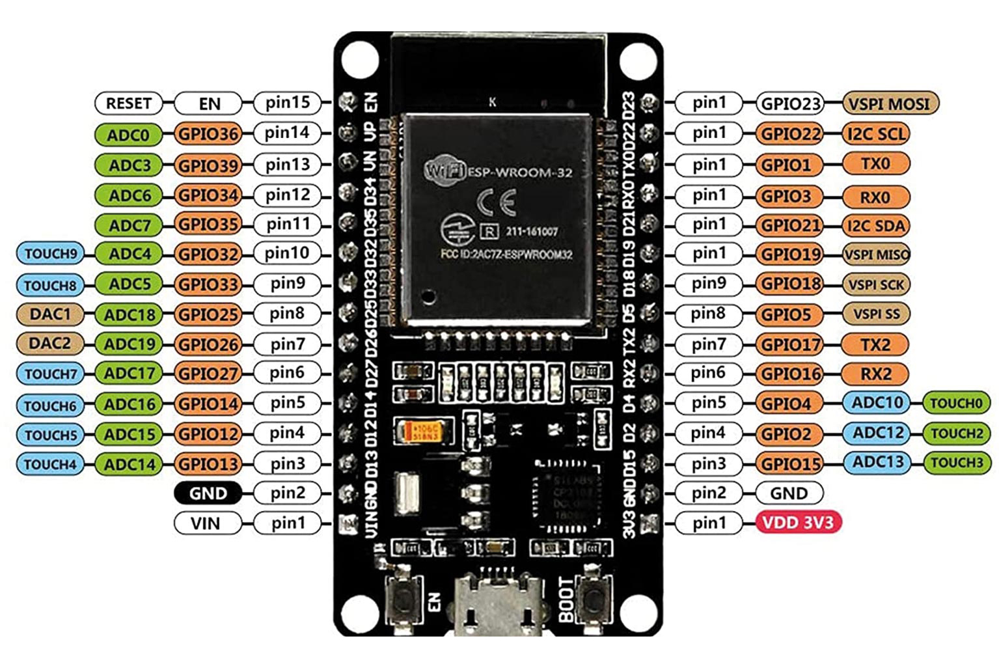

CPU dual-core Xtensa LX6 até 240 MHz, conectividade Wi-Fi 2.4 GHz e Bluetooth (Classic/BLE) nativas.
Por que ESP32 para IoT?
Características-Chave
CPU dual-core Xtensa LX6 até 240 MHz, conectividade Wi-Fi 2.4 GHz e Bluetooth (Classic/BLE) nativas.
Muitos GPIOs, ADCs, DACs, PWM, touch capacitivo, timers e periféricos seriais (UART/I2C/SPI).
Suporte amplo: Arduino core, ESP-IDF (framework oficial) e MicroPython.

Vantagens Práticas
Custo-Benefício
Ótima relação custo/benefício com comunidade ativa e extensa documentação disponível.
Prototipagem Rápida
Protótipos rápidos com Arduino IDE e Wokwi, com caminho claro para produção usando ESP-IDF.
Conectividade + Processamento
Ideal para projetos IoT que exigem conectividade wireless integrada e processamento local simultâneo.
Ecossistema Rico
Milhares de bibliotecas, exemplos e projetos open-source disponíveis na comunidade maker.